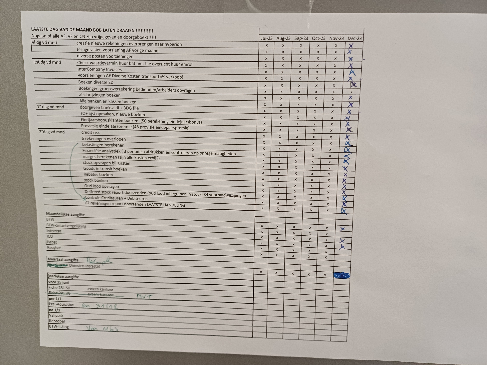

/Ecobat battery logo.jpg "logo Ecobat")
Voormiddag
Vandaag bracht ik een volledige dag op de boekhoudafdeling door. Om 8.30 uur liet Brigitte mij zien hoe je kasafschriften van KBC en ING moet afdrukken. De rest van de voormiddag mocht ik meekijken met Jonas. Eerst moesten we geperforeerde verkoopfacturen aflopend sorteren in een rode kaft. Nadien moesten we enkele verkoopfacturen in een envelop steken en voorzien van een etiket. Belangrijk om te weten is dat niet iedere envelop voorzien is van hetzelfde etiket. Belgische klanten hebben een ander etiket dan buitenlandse klanten. Belgische klanten hebben een etiket waarop het hoofd van onze vorst staat. Om 9 uur verzond Jonas aanmaningen naar klanten (aanmaning= verzoek naar de klant om onbetaalde verkoopfacturen te betalen), hierna keek ik toe hoe Jonas enkele facturen verzond. Om 9.30 uur kreeg Jonas de opdracht om de afgeprinte bankafschriften -die Brigitte eerder vandaag had afgeprint-in te boeken op BOB.
De volgende taak die Jonas toegewezen kreeg, was het controleren van het eindbedrag bij enkele aankoopfacturen. Om 10 uur lichtte Karin toe hoe men facturen boekt die stadsbesturen moeten betalen. Vanaf heden wordt dit via 'Peppos' op 'ItsMe' gedaan. Pepos is een formulier dat de boekhouder op de website 'Mercurius' moet invullen om te kunnen factureren. Ik en Jonas mochten dit een paar keer doen. De eerste keer was het een beetje zoeken, maar de tweede keer lukte het al aardig. Ik maakte ook kennis met het begrip 'negatieve factuur'. Tot de middagpauze keek ik toe hoe Jonas een dagboek dat in BOB stond, converteerde naar een Excel-bestanden. Dit deed hij voor ieder dagboek in BOB. Een voorbeeld van een dagboek: verkoopfacturen in Amerikaanse dollar, Isabel-aangifte (personenbelasting), verkoopfacturen enz....
Middagpauze
In de middagpauze viel me de uitstekende werksfeer op. Er werd veel gelachen en gepraat. Gênante stiltes waren er haast niet.
Namiddag
In de namiddag legde Karin de methode uit hoe de facturen in het bedrijf verwerkt worden. Dit gebeurt via Vario. Naast de theorie die hierbij kwam kijken, deed ik ook een paar praktische dingen. Zo bezorgde ik haar de afgeprinte facturen, klasseerde ik facturen in kaften en verzond ik een paar emails met onbetaalde facturen via Vario naar de klant. Deze taken bevielen mij. Op de boekhoudafdeling hangt er ook een 'to do'-lijstje gemaakt van alle dingen die doorheen het jaar moeten gebeuren. Dit lijstje staat hieronder afgebeeld.
Zo moet er een lijst gemaakt worden van alle ingezamelde batterijen die werden gedeponeerd bij Bebat in het afgelopen jaar. Ik keek aandachtig toe hoe Karin een afgeprinte tabel uit Excel nauwkeurig overtypte op de website van Bebat. Tegen het sluitingsuur, 17 uur, liet Brigitte een Excel-bestand zien waar alle grootboekrekeningen en hun bedragen opstonden. Frappant was dat de Engelse collega's andere nummers voor rekeningen gebruiken. Brigitte liet me nog even zien wat iedere werknemer moet doen, alvorens die de werkvloer verlaat. Iedere werknemer moet nl. dagelijks via de website 'intranet' het uur ingeven waarop hij begon te werken, en wanneer hij hiermee gestopt is .
Mijn dag in 1 woord
herkenning
'Herkenning', omdat ik vandaag veel zaken herkend heb uit lessen die gegeven werden in de school. Dit is handig, want dan redeneer je met de werknemers mee. Een voorbeeld is BOB: in mijn vijfde jaar heb ik hier veel mee gewerkt, dus weet ik welke stappen er doorloopt moeten worden om bv. een document af te printen. 'Herkenning', omdat ik ook de werking van het bedrijf begin te snappen (zo weet ik bv. welke documenten er van de boekhoudafdeling naar de administratieafdeling wordt doorgestuurd en omgekeerd). Ik snap de werking van het bedrijf.